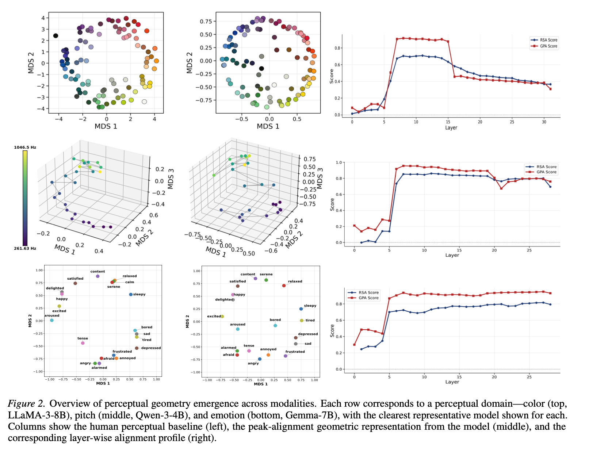
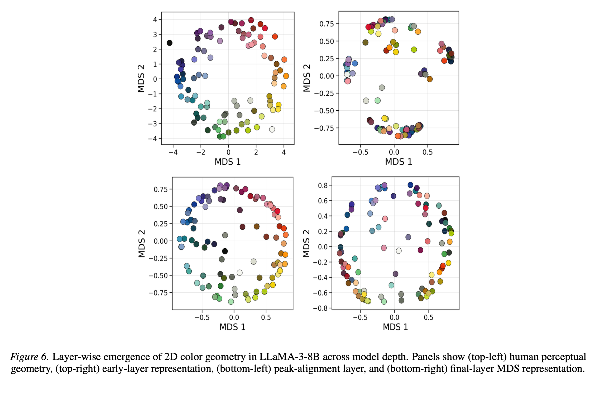
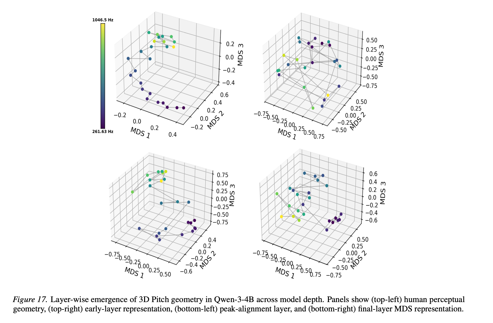
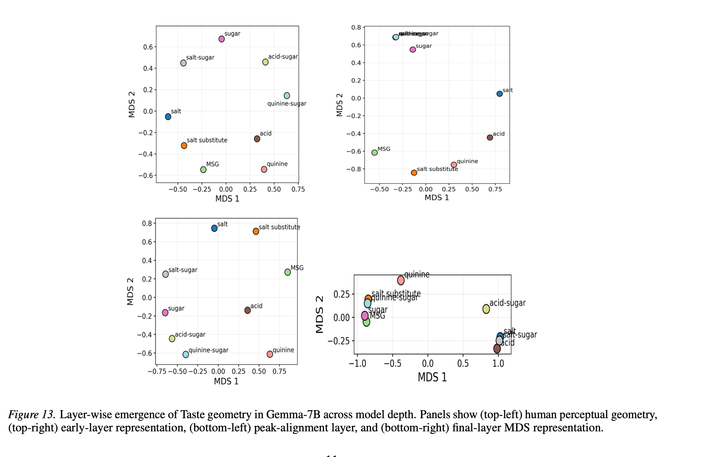
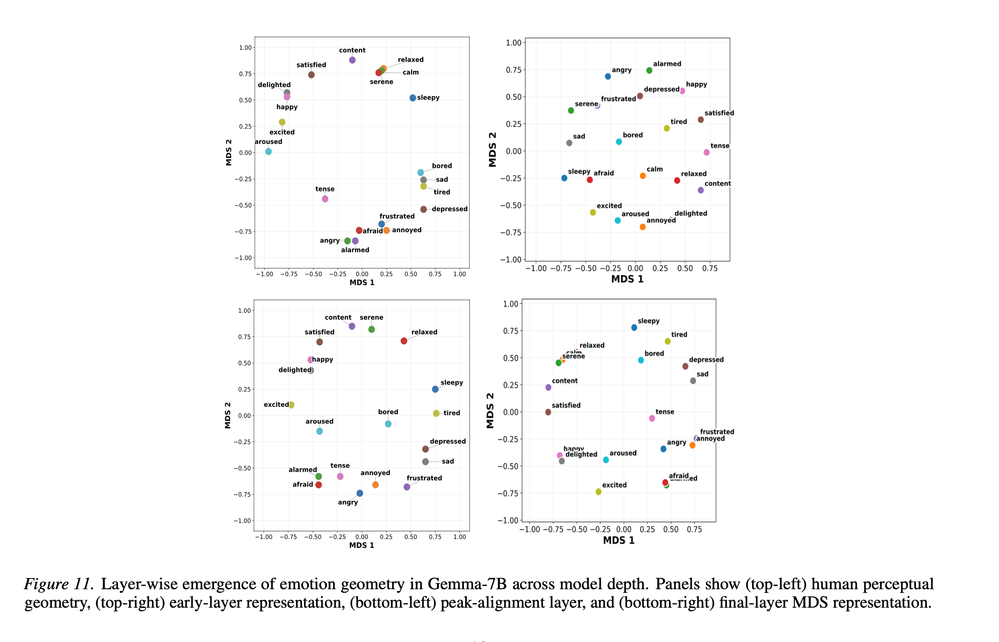
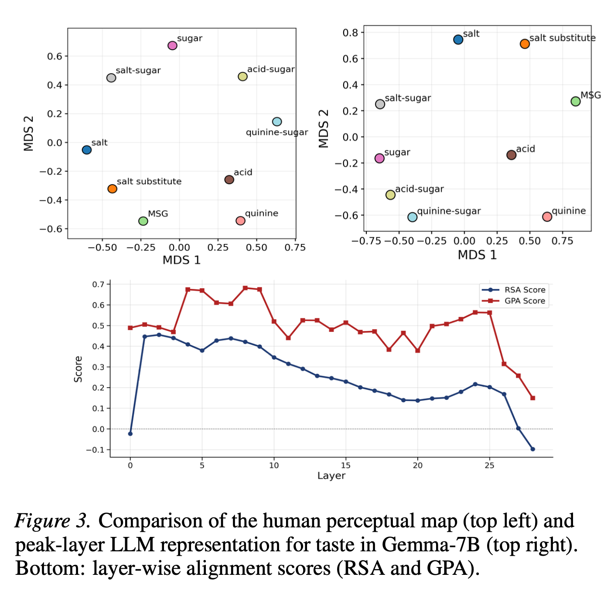

LLMs are trained purely on text — yet their internal representations spontaneously develop geometric structures that mirror human perception across color, pitch, emotion, and taste. These structures emerge in intermediate layers and fade before the output, revealing a hidden perceptual layer inside language models.
Key Findings
By extracting layer-wise representations from open-weight transformers and comparing them to human perceptual baselines, we uncovered a consistent pattern across domains and model families.
Color wheels, pitch spirals, emotion manifolds, and taste maps form spontaneously inside LLMs trained only on text.
Taste peaks early and fades fast. Emotion peaks later and persists deep. Pitch and color lie in between, each with their own curve.
Early layers are diffuse, intermediate layers crystallize human-like manifolds, later layers dissolve them as models shift to task-specific computation.
Overview
The figure below shows the central result: for color (LLaMA-3-8B), pitch (Qwen-3-4B), and emotion (Gemma-7B), we display the human perceptual baseline, the model's peak-alignment geometry, and the layer-wise alignment profile.

Figure 2. Each row is a perceptual domain. Left column: human perceptual baseline. Middle: peak-alignment model geometry via MDS. Right: RSA and GPA alignment scores across layers, showing the rise–peak–fade trajectory.
The Pattern
Across every model and domain we tested, perceptual geometry follows the same arc. The peak layer differs — simpler domains crystallize earlier — but the shape of the curve is strikingly consistent.
Layer-wise alignment profile (schematic)
Results by modality
At peak alignment layers, color representations organize into a smooth circular manifold closely resembling the human perceptual color wheel — arising from purely linguistic statistics.
The depth-wise pattern is consistent across all four architectures: a clear rise–peak–fall profile where color alignment peaks at an intermediate layer before late-layer attenuation. Qwen-3-4B shows a brief late-layer rebound before final degradation.

Fig. 6. Layer-wise emergence of 2D color geometry in LLaMA-3-8B. Human baseline (top-left), early layer (top-right), peak layer (bottom-left), final layer (bottom-right).
The peak-layer geometry reveals a smooth arc-like organization consistent with continuous, ordinal human pitch perception. No discrete clusters — pitch is represented relationally, as a continuous manifold.
Early layers show weak partial ordering; intermediate layers undergo a structural transition; later layers progressively deform this organization.

Fig. 17. Layer-wise emergence of 3D Pitch geometry in Qwen-3-4B. Human baseline (top-left), early layer (top-right), peak layer (bottom-left), final layer (bottom-right).
The peak-layer representation recovers a well-organized affective manifold aligned with the human valence–arousal structure. Unlike color, this alignment remains comparatively stable across later layers.
This persistence suggests that emotional geometry is more deeply encoded — perhaps because affective concepts are more densely represented in language than sensory modalities.

Fig. 11. Layer-wise emergence of emotion geometry in Gemma-7B. Human baseline (top-left), early layer (top-right), peak layer (bottom-left), final layer (bottom-right).
Taste representations recover a qualitatively well-formed manifold with strong geometric alignment (high GPA). The relative ordering of primary tastes and mixtures broadly matches human perceptual arrangement.
However, taste diverges from other domains: lower RSA scores and noisier layer-wise profiles indicate less precise pairwise relations, and the geometry degrades more rapidly after its peak.

Fig. 13. Layer-wise emergence of Taste geometry in Gemma-7B. Human baseline (top-left), early layer (top-right), peak layer (bottom-left), final layer (bottom-right).
Example · Taste in detail
This figure directly compares the human perceptual map for taste to Gemma-7B's peak-layer representation, alongside the layer-wise alignment scores.

Figure 3. Human perceptual map (top left) vs. Gemma-7B peak-layer LLM representation for taste (top right). Bottom: layer-wise RSA and GPA alignment scores.
"The peak-layer map recovers a qualitatively well-formed taste manifold, with the relative ordering of primary tastes and mixtures broadly matching the human perceptual arrangement — despite the model never tasting anything."
Methodology
No probing classifiers. No fine-tuning. We extract layer-wise residual stream representations, construct geometric maps, and compare them to human perceptual baselines using two complementary metrics.
01 · Stimuli
Each stimulus (e.g. #9B081A, afraid, 261 Hz) is embedded in a short template designed to avoid semantic bias.
02 · Extract
Last-token hidden state activations are extracted at every transformer layer from the residual stream.
03 · Geometry
Pairwise cosine dissimilarities are projected into low-dimensional space via MDS, verified with Isomap to rule out projection artifacts.
04 · Compare
Representational Similarity Analysis and Generalized Procrustes Analysis measure alignment against human perceptual baselines at each layer.
Paper summary
📄 New pre-print
LLMs are trained only on text — yet their internal representations spontaneously organize in ways that resemble human perceptual geometry across different perceptual domains, with structures peaking in intermediate layers before attenuating in deeper representations.
1 / 6
LLMs spontaneously develop structured human-like perceptual geometry inside their hidden representations — even though they are trained only on text and never receive direct perceptual supervision. Across color, pitch, emotion, and taste, concepts organize into meaningful geometric manifolds that closely resemble human perceptual organization.
2 / 6
Different perceptual domains do not emerge identically inside LLMs. Each domain follows its own distinct layer-wise emergence trajectory. Simpler relational structures like taste emerge earlier and degrade quickly, while more complex domains like emotion remain stable across deeper layers.
3 / 6
Perceptual geometry inside LLMs is not uniformly distributed across layers — it emerges transiently during computation. Early layers contain weak or fragmented structure, intermediate layers organize into coherent human-like manifolds, and later layers progressively attenuate these representations. This reveals a surprisingly consistent "rise → peak → fade" trajectory across models and perceptual domains.
4 / 6
Our analysis is fully intrinsic: we directly study layer-wise residual stream representations without additional probes or fine-tuning. By combining MDS/Isomap reconstruction with RSA and Procrustes alignment against human perceptual baselines, we trace how perceptual organization evolves throughout the network.
5 / 6
Color representations organize into clear color-wheel-like manifolds. Emotion behaves differently: its valence–arousal-like structure not only emerges strongly but remains comparatively stable across later layers, indicating more persistent retention of affective geometry through depth.
6 / 6
Pitch progressively organizes into smooth continuous manifolds reflecting the ordinal nature of pitch perception, before deforming in deeper layers. Taste geometry emerges surprisingly early but is noisier and less stable — rapidly degrading after its peak compared to the other domains.
Citation
This paper is currently under review at ICML 2026. If you use this work, please cite:
@article{transientperceptualgeometry2026,
title = {Geometry of Human Perceptual Domains Emerges
Transiently in LLM Representations},
author = {Anonymous Authors},
journal = {Under review, ICML 2026},
year = {2026},
url = {https://arxiv.org}
}